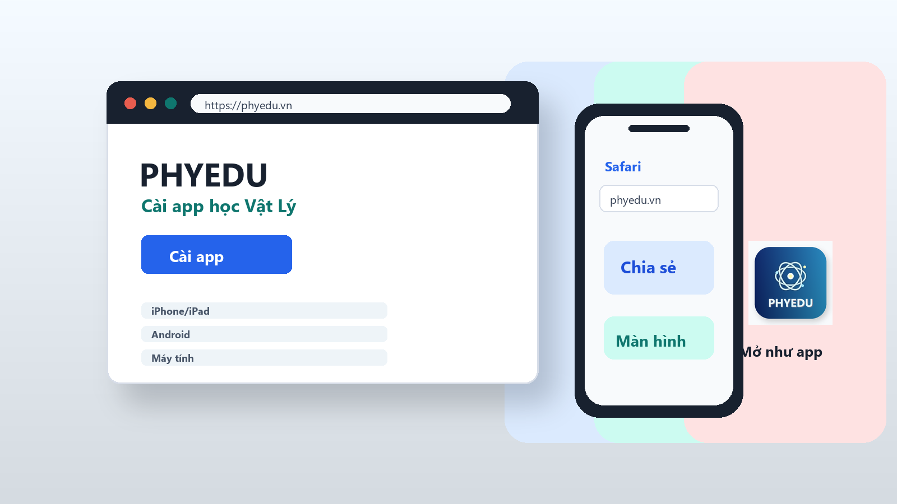

Dùng đúng trình duyệt
iPhone/iPad dùng Safari. Android dùng Chrome. Máy tính dùng Chrome hoặc Microsoft Edge.
Dành cho học sinh, giáo viên và phụ huynh
Làm theo hướng dẫn bên dưới để đưa PHYEDU ra màn hình chính điện thoại hoặc cài thành ứng dụng riêng trên máy tính. Sau khi cài xong, người dùng mở PHYEDU bằng biểu tượng app như các ứng dụng thông thường.

Cài nhanh
Gửi link này cho người dùng. Khi mở link trên đúng trình duyệt, họ có thể cài PHYEDU ra màn hình chính.
iPhone/iPad dùng Safari. Android dùng Chrome. Máy tính dùng Chrome hoặc Microsoft Edge.
PHYEDU hiện được cài theo dạng web app/PWA, không cần tìm trên App Store hoặc CH Play.
Cài thành công khi màn hình chính xuất hiện biểu tượng PHYEDU và bấm vào mở được app.
Hướng dẫn theo thiết bị
Safari trên iPhone/iPad
iOS không tự hiện nút cài app như Android. Người dùng cần mở bằng Safari rồi thêm thủ công vào màn hình chính.
Chrome trên Android
Android thường cho cài trực tiếp từ Chrome. Nếu nút cài chưa hiện, có thể dùng menu ba chấm của trình duyệt.
Chrome/Edge trên máy tính
Trên máy tính, PHYEDU có thể mở trong cửa sổ riêng và ghim vào taskbar để học nhanh hơn.
Sau khi cài
Sau khi làm xong các bước, hãy kiểm tra nhanh để chắc chắn người dùng đã cài đúng app PHYEDU chứ không chỉ lưu tạm một đường link.
Xử lý lỗi thường gặp
Hãy kiểm tra lại người dùng đang mở bằng Safari. Nếu mở từ Zalo, Messenger, Facebook hoặc Google app, hãy sao chép link rồi dán vào Safari.
Mở bằng Chrome, tải lại trang, chờ trang tải xong rồi bấm menu ba chấm. Nếu vẫn không có, chọn “Thêm vào màn hình chính”.
Xóa icon vừa tạo, mở lại link chính thức và cài lại. Nếu web vừa được cập nhật, chờ vài phút để trình duyệt lấy lại icon mới.
Kiểm tra kết nối mạng, đóng app rồi mở lại. Nếu vẫn lỗi, mở PHYEDU bằng trình duyệt để kiểm tra web chính có đang hoạt động không.
Dùng Chrome hoặc Edge phiên bản mới. Vào menu ba chấm, chọn Apps, sau đó chọn Install this site hoặc Cài đặt trang web này.